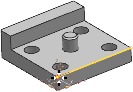
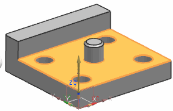
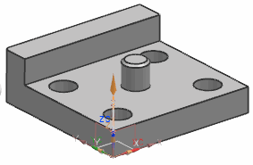

Define a teach point and operator instructions
Direct Computer Control (DCC) systems usually require that the probe must first move to a part teach point location when the machine starts up. In this activity, you will define a teach point and add DMIS commands to instruct the machine operator to manually inspect the teach point.
-
On the Feature toolbar, click Point .
-
In the Point Inspection Feature dialog box, click Point Dialog

-
In the Point dialog box, from the Type list, select End Point.
-
On the work part, click the point as shown and click OK.

-
In the Point Inspection Feature dialog box, in the Normal Direction group, click Select Projection Faces, and then click the largest top plane.

-
In the Feature Name box, type TEACH_POINT and click OK.
In the Inspection Navigator, the point appears as the last item in the FEATURES program group. In the graphics window, the teach point appears with the location and vector direction that you specified.

-
In the Inspection Navigator, drag the TEACH_POINT feature below the DEFINE_MCS alignment command.

PART_ALIGNMENT

 DEFINE_MCS
DEFINE_MCS
 TEACH_POINT
TEACH_POINT
-
On the Insert toolbar, click CMM Command
 .
.
-
In the Insert Command dialog box, in the Program Statements box, type:
TEXT/OPER,'Take a teach point.'
This command prompts the machine operator to take a teach point when the DMIS output runs on the CMM.
-
In the Operation Name group, type OPER_MSG_TP and click OK.
The command appears in the PROGRAM_HEADER program group.
PROGRAM_HEADER

 PART_HDR_INFO
STARTUP_CMDS
OPER_MSG_TP
PART_HDR_INFO
STARTUP_CMDS
OPER_MSG_TP
-
On the Insert toolbar, click CMM Command
again.
-
In the Insert Command dialog box, from the Command Type list, select Measurement Mode.
-
In the Command Parameters group, select the Manual check box.
-
In the Operation Name group, type MODE_MANUAL and click OK.
This command pauses the machine so that the operator can manually touch the probe to the teach point. Measurement modes affect the execution of measurement, motion, and sensor calibration statements.
-
In the Inspection Navigator, do the following.
-
In the PROGRAM_HEADER program group, select OPER_MSG_TP, hold your Ctrl key, and then select MODE_MANUAL.
-
Right-click either selected command and choose Cut.
-
Right-click the PART_ALIGNMENT program group and choose Paste Inside.
The commands now appear beneath the teach point feature definition.
PART_ALIGNMENT
DEFINE_MCS
TEACH_POINT
OPER_MSG_TP
MODE_MANUAL
-
Save your inspection setup file.
-
The teach point is now defined and the operator is ready to measure the reference point that will be used to define a PCS alignment strategy.